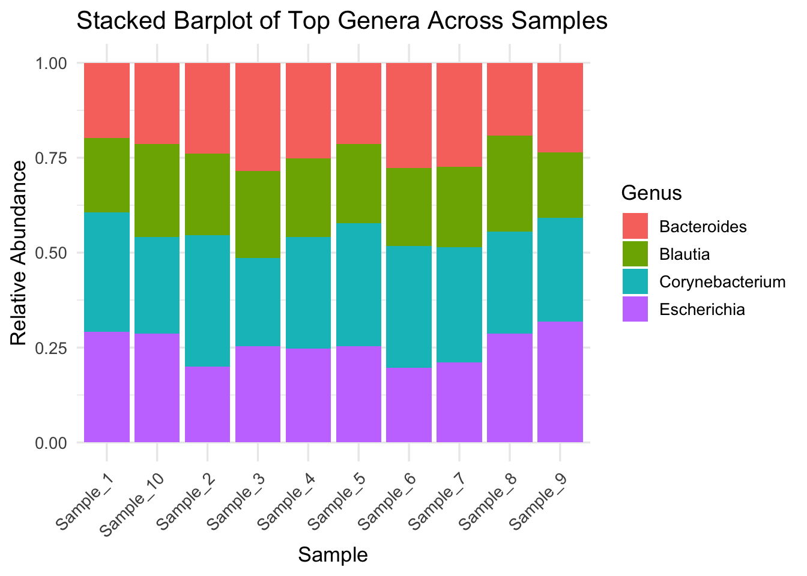

Q&A 8 How do you create a stacked bar plot of top genera across samples?
8.1 Explanation
Stacked bar plots are widely used in microbiome studies to show relative abundance of microbial taxa across samples. This visual helps assess: - Community composition - Dominant vs rare genera - Variability between sample groups
Here we simulate a relative abundance plot using the Genus column from the taxonomy file merged with the OTU table.
8.2 Python Code
import pandas as pd
import seaborn as sns
import matplotlib.pyplot as plt
# Load OTU table and taxonomy
otu_df = pd.read_csv("data/otu_table_filtered.tsv", sep="\t", index_col=0)
tax_df = pd.read_csv("data/otu_taxonomy.tsv")
# Merge taxonomy info (Genus) with OTU table
merged = otu_df.merge(tax_df[["OTU_ID", "Genus"]], left_index=True, right_on="OTU_ID")
melted = merged.drop("OTU_ID", axis=1).melt(id_vars="Genus", var_name="Sample", value_name="Abundance")
# Summarize top 8 genera, lump rest as 'Other'
top_genera = melted.groupby("Genus")["Abundance"].sum().nlargest(8).index
melted["Genus"] = melted["Genus"].where(melted["Genus"].isin(top_genera), "Other")
# Normalize per sample
melted = melted.groupby(["Sample", "Genus"])["Abundance"].sum().reset_index()
melted["RelativeAbundance"] = melted.groupby("Sample")["Abundance"].transform(lambda x: x / x.sum())
# Plot
plt.figure(figsize=(12, 5))
sns.barplot(data=melted, x="Sample", y="RelativeAbundance", hue="Genus")
plt.title("Stacked Barplot of Top Genera Across Samples")
plt.ylabel("Relative Abundance")
plt.xticks(rotation=45)
plt.legend(bbox_to_anchor=(1.05, 1), loc="upper left")
plt.tight_layout()
plt.show()8.3 R Code
library(tidyverse)
# Load OTU and taxonomy tables
otu_df <- read.delim("data/otu_table_filtered.tsv", row.names = 1)
tax_df <- read.delim("data/otu_taxonomy.tsv")
# Merge by rownames (OTUs)
otu_df$OTU_ID <- rownames(otu_df)
merged_df <- left_join(otu_df, tax_df, by = "OTU_ID")
# Convert to long format and summarize
long_df <- merged_df %>%
pivot_longer(cols = starts_with("Sample"), names_to = "Sample", values_to = "Abundance") %>%
group_by(Sample, Genus) %>%
summarise(Abundance = sum(Abundance), .groups = "drop") %>%
group_by(Sample) %>%
mutate(RelativeAbundance = Abundance / sum(Abundance))
# Keep top 8 genera
top_genera <- long_df %>%
group_by(Genus) %>%
summarise(Total = sum(RelativeAbundance), .groups = "drop") %>%
top_n(8, Total) %>%
pull(Genus)
long_df <- long_df %>%
mutate(Genus = if_else(Genus %in% top_genera, Genus, "Other"))
# Plot
ggplot(long_df, aes(x = Sample, y = RelativeAbundance, fill = Genus)) +
geom_col() +
theme_minimal(base_size = 13) +
theme(axis.text.x = element_text(angle = 45, hjust = 1)) +
labs(title = "Stacked Barplot of Top Genera Across Samples", y = "Relative Abundance")